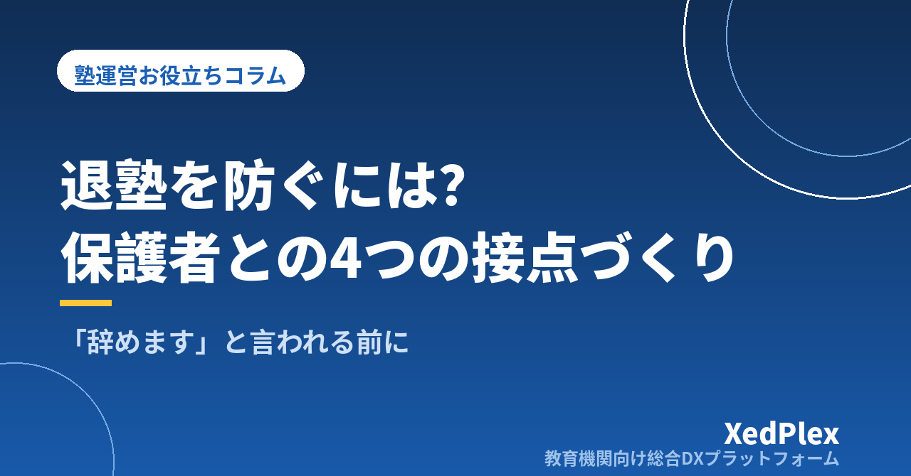

退塾を防ぐ保護者コミュニケーションの仕組み｜「辞めます」と言われる前に信頼を積み上げる4つの接点

「今月いっぱいで辞めさせていただきます」──前触れもなく届いた保護者からのメッセージに、頭が真っ白になった経験はないでしょうか。本人は楽しそうに通っていたはずなのに、成績も少しずつ上がっていたはずなのに。個人経営の塾にとって生徒ひとりの退塾は売上の問題であると同時に、「自分の指導が届いていなかったのか」という塾長自身の気持ちに深く刺さる出来事です。
ただ、退塾の多くは塾側から見えていなかっただけで、保護者の側では不安や不満が静かに積み上がっています。この記事では、保護者がなぜ不安になるのかを整理したうえで、退塾の申し出が来る前に信頼を積み上げていく保護者コミュニケーションの「仕組み」を、日常通知・定期報告・面談・異変時連絡の4つの接点に分けて解説します。塾長ひとりでも回せることを前提にした内容です。
退塾は「突然」ではなく、不安が積み上がった結果
退塾の理由として塾長が耳にするのは、「成績が思ったほど伸びなかった」「部活や習い事と両立できない」「家計の見直し」「本人が行きたがらなくなった」「友達と同じ塾に移る」といったものが中心でしょう。転居や進路の確定など、塾側ではどうにもならない事情もあります。
ここで大切なのは、保護者が口にする理由と本当の理由が一致しないことが多い点です。「部活が忙しくて」と言われても、その裏には「忙しい中で通わせるほどの価値を感じられなくなった」という判断があります。つまり退塾のきっかけは外側にあっても、最後の一押しをするのは「この塾に払い続ける価値があるか」という保護者の評価であり、その評価は日々の小さな情報の積み重ねで決まっています。
逆に言えば、月謝に見合う価値が保護者に伝わり続けていれば、多少のきっかけがあっても「もう少し続けさせよう」と踏みとどまってもらえる。退塾防止とは、引き止めの話術ではなく、価値を伝え続ける仕組みの話なのです。
保護者が不安になる3つの「見えない」
保護者は塾の中を見ることができません。塾での出来事は、子どもの断片的な報告と、塾からの連絡でしか知りようがないのです。この「見えなさ」が不安の正体で、大きく次の3つに分けられます。
| 見えないもの | 保護者の心の声 | 放置すると |
|---|---|---|
| 通塾の実態 | 「本当に塾に行っているの？」「何時に終わって帰ってくるの？」 | 安全面の不安が「管理が甘い塾」という印象に変わる |
| 学習の中身 | 「今日は何をやったの？」と聞いても「別に」としか返ってこない | 月謝が「何に使われているか分からないお金」になる |
| 成果と見通し | 「このままで志望校に届くの？」「塾長はどう考えているの？」 | 成績が横ばいの時期に「他の塾ならもっと…」と比較が始まる |
注目したいのは、3つとも「塾がサボっているから起きる不安」ではないということです。真面目に指導している塾ほど目の前の生徒に集中し、保護者に伝える時間が後回しになりがちです。指導の質と保護者の安心度は、残念ながら自動的には比例しません。伝える仕組みが別に必要なのです。
退塾を防ぐ4つの接点｜「頻度」と「目的」を決めて仕組みにする
保護者コミュニケーションを「気づいたときに連絡する」のままにしておくと、忙しい時期ほど連絡が途絶えます。おすすめは、接点を4種類に分け、それぞれの頻度と目的をあらかじめ決めておくことです。
| 接点 | 頻度 | 目的 | 手段の例 |
|---|---|---|---|
| ① 日常の通知 | 毎回の通塾時 | 「見えない通塾」を消す | 入退室の自動通知、欠席・振替の連絡 |
| ② 定期の報告 | 週1〜月1 | 「見えない学習内容」を消す | 指導報告、月次の学習レポート |
| ③ 節目の面談 | 年2〜3回 | 「見えない見通し」を消す | 三者面談、テスト後の面談 |
| ④ 異変時の連絡 | 兆候が出たとき | 不満が固まる前に手を打つ | 電話、個別メッセージ |
① 日常の通知：手間ゼロで「見守っている」を伝える
入退室のたびに保護者へ通知が届く仕組みは、保護者からすると「塾に着いた」「今から帰る」が分かる安心材料であり、塾からすると「ちゃんと見ています」という無言のメッセージになります。ポイントは、塾長や講師が手を動かさなくても届く形にすることです。手動で送る通知は、忙しい日に必ず抜けます。入退室管理の方法別の比較はこちらの記事で解説しています。
② 定期の報告：「今日は何をやったか」を塾が代わりに答える
子どもに聞いても答えが返ってこない「今日の中身」を、塾が短くても定期的に伝えます。長文である必要はありません。「今日は一次関数の文章題。式を立てるところまでは一人でできるようになりました。次回はグラフとの対応を練習します」──この程度の3行でも、保護者は「見てもらえている」と感じます。大切なのは、書く量よりも途切れないことです。書式を固定し、書く曜日を決めてしまいましょう。連絡手段そのものの整理については保護者連絡の使い分けの記事が参考になります。
③ 節目の面談：数字と一緒に「次の一手」を示す
面談で保護者が本当に知りたいのは、点数そのものより「塾長はこの子をどう見ていて、次に何をするつもりか」です。テストの得点と平均点の推移を並べ、伸びた単元とこれから取り組む単元を具体的に示す。成績が横ばいでも、「横ばいの理由」と「打ち手」が語れれば信頼は落ちません。面談で見せるための成績の記録方法は成績管理の記事にまとめています。
④ 異変時の連絡：一番効くのに一番抜けやすい接点
4つの中で最も退塾防止に直結し、かつ最も実行が難しいのがこの接点です。次の章で詳しく見ていきます。
「異変サイン」を早く拾い、48時間以内に動く｜申し出が来たときの対応まで
退塾を申し出る保護者や生徒は、その前に何らかのサインを出しています。代表的なものを挙げてみます。
- 欠席や遅刻が増えた（特に「体調不良」「用事」が続く）
- 宿題の提出率が下がった、授業中の質問が減った
- 保護者からの返信が短くなった、既読はつくが反応がない
- 面談の日程調整に応じてくれない、先延ばしにされる
- 月謝の支払いが遅れ始めた
- 本人が「他の塾の話」をするようになった
問題は、これらのサインが一つひとつは小さく、塾長の記憶だけで追いかけるには限界があることです。「そういえば最近、来ていない気がする」と気づいたときには、保護者の中で答えが出ていることも少なくありません。だからこそ、出欠・宿題・連絡のやり取りといった記録を、生徒ごとにひと目で振り返れる形で残しておくことが、退塾防止の土台になります。
サインに気づいたら、理由を決めつけず「最近お休みが続いていましたが、体調はいかがですか。塾で気になることがあればお聞かせください」と一本連絡します。この段階では引き止めではなく、話を聞く姿勢を見せることが目的です。多くの場合、保護者は「気にかけてもらえた」というだけで気持ちが変わります。逆に、ここで放置された経験は「辞めても気づかれない塾」という決定的な印象を残します。
それでも「辞めたい」と言われたら｜引き止めない、聞き切る、道を残す
早めに動いていても、退塾の申し出は来ます。そのときの対応次第で、その家庭がその後に塾をどう語るかが変わります。押さえておきたいのは次の3点です。
- その場で引き止めない。「せめてあと1か月」と食い下がるほど、保護者の決心は固くなります。まずは「お伝えいただきありがとうございます」と受け止めます。
- 理由を聞き切る。反論せず、最後まで聞きます。ここで聞けた理由は、次の退塾を防ぐための最も価値ある情報です。「塾側で改善できたことはありましたか」と一言添えると、本音が出やすくなります。
- 道を残す。休塾という選択肢や、季節講習だけの参加、受験期の再入塾など、関係が切れない出口を用意します。円満に辞めた家庭は、下の子の入塾や知人の紹介という形で戻ってくることがあります。
聞き取った理由は、必ず記録に残しましょう。「講師との相性」「時間帯」「費用」など、退塾理由を数件並べるだけで、自塾の弱点が見えてきます。
仕組み化のコツ｜塾長の記憶と気合いに頼らない
ここまでの内容を「全部やろう」と気合いで始めると、繁忙期に確実に止まります。仕組みとして続けるためのコツは3つです。
- 自動でできることは自動にする。入退室通知や欠席連絡の受付など、人が手を動かさなくても届く接点を増やし、塾長の時間は報告の中身と面談に使う。
- 書式と頻度を固定する。指導報告のテンプレート、月次レポートの項目、面談の進行表を決めておくと、「何を書くか」で悩む時間が消える。
- 記録を1か所に集める。出欠・報告・面談メモ・保護者とのやり取りが生徒ごとにひとつの場所にまとまっていれば、異変サインに気づけるし、面談前の準備も短くなる。
個別に見れば地味な取り組みばかりですが、退塾防止の本質は「保護者が不安になる前に情報が届いている状態」を、塾長の調子や忙しさに左右されずに保ち続けることです。仕組みが回り始めると、退塾が減るだけでなく、保護者からの紹介が増えるという形でも効いてきます。
まとめ
退塾は突然に見えて、実際には「通塾の実態」「学習の中身」「成果と見通し」が保護者に見えないことから生まれる不安の積み重ねです。日常の通知・定期の報告・節目の面談・異変時の連絡という4つの接点を、それぞれ頻度と目的を決めて仕組みにし、記録をもとに異変サインへ早めに動く。この繰り返しが、引き止めの話術よりもはるかに確実に退塾を減らします。ひとりで塾を回す塾長ほど、「伝える」を気合いではなく仕組みに任せていきましょう。
この記事を書いた運営より
私たちは、個人経営・小規模の学習塾向けに、生徒管理・QRコードでの入退室記録・月次請求・保護者へのLINE/メール通知・AIによる学習支援までをひとつにまとめた教育機関向け総合DXプラットフォーム「XedPlex（ゼドプレックス）」を開発・提供しています。初期費用は0円、料金は生徒1名あたり月額300円（税込）から。生徒50名の塾なら月15,000円（税込）です。全国8つの教室で導入されており、導入塾には紹介ホームページの無料作成も行っています。機能の詳細説明はこちら。
XedPlexの詳細を見る